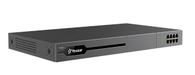

Yeastar P560
Цена носит информационный характер — актуальную стоимость и наличие уточняйте у менеджера.
Yeastar P560 — это IP-АТС P-серии на 100 абонентов и 30 одновременных вызовов ( может расширяться до 200 абонентов и 60 вызовов). IP-АТС P560 обладает модульной структурой и может комплектоваться одними и теми-же интерфейсными модулями расширения, которые используются в IP-АТС S-серии.
IP-АТС P560 может работать в VoIP сетях, имеет возможность подключения аналоговых городских линий/аналоговых телефонов, линий ISDN PRI, BRI и GSM-линий.
Имеет поддержку технологии Gigabit Ethernet.
Функционал IP-АТС Yeastar P560 в базовой поставке в основном аналогичен функционалу IP-АТС S-серии и дополнительно может включать в себя следующие сервисы:
Функционал IP-АТС Yeastar P560 может расширяться при активации годовых лицензий P550 Standard License, P560 Enterprise License, P560 Ultimate License, обеспечивающих подключение сервисов удаленного доступа, колл-центра, видеоконференцсвязи и других полезных функций.
- WebRTC Audio Call,
- Linkus Mobile Client,
- Linkus Desktop Client,
- Linkus Web Client,
- Linkus Select & Dial Hotkey,
- Operator Panel и многое другое ...
ВНИМАНИЕ! В IP-ATC Yeastar P560 имеется только один слот, в который можно установить только одну плату EX30 для подключения потока E1 или одну плату EX08, которая необходима для подключения модулей O2, S2, SO, GSM, BRI (две платы EX30 и EX08 нельзя установить в Yeastar P560).
Гарантия 3 (три) года !
Характеристики
Особенности
- Пользователей: до 100 внутренних абонентов. Расширяется до 200 с помощью DSP модуля D30.
- Одновременные вызовы: 30. Расширяется до 60 с помощью DSP модуля D30.
- Голосовая почта: 8700 мин. на встроенную flash-память
- Жесткий диск: 2.5" SATA2* (устанавливается при использовании функции записи разговоров, не входит в комплект поставки).
- Поддерживаемые интерфейсы:
До 8 аналоговых портов (FXO/FXS), используя модули S2 (2 FXS), O2 (2 FXO) и SO (FXS и FXO)
До 8 BRI портов, используя модули BRI
До 4 GSM порта, используя модуль GSM
До 4 UMTS-портов (UMTS 900/2100МГц или 850/2100МГц или 850/1900МГц), используя модули UMTS
До 1 порта E1, используя модуль EX30
- Доступные платы расширения:
Модуль расширения DSP D30 (+ 100 пользователей, + 30 одновременных вызовов) (максимум 1, не занимает слот для EX30 или EX08).
Для подключения O2, S2, SO, GSM, BRI используется плата расширения EX08 (максимум 1) — до 4-х модулей на плату расширения EX08.
Для подключения потока E1 используется плата расширения EX30 (максимум 1).
Максимальное количество плат EX30 или EX08 равно 1-й.
Внимание: интерфейсные модули в комплект поставки не входят !
Возможности
- Автоматическая запись разговоров
- Чтение/запись через NFC
- Трансфер вызова
- Переадресация вызова
- Парковка вызова
- Захват вызова
- Групповой вызов
- Маршрутизация вызова
- Режим ожидания
- Интерком и пейджинг
- Конференц-комнаты
- Режим не беспокоить (DND)
- Очередь
- Интерактивный голосовой автоответчик (IVR) с гибкой конфигурацией
- Музыка в режиме ожидания (Music On Hold)
- Голосовая почта
- Быстрый набор
- Личный кабинет пользователя
- Отображение статуса абонента (BLF)
- Доступ к линиям по PIN-коду
- Привязка мобильного номера к внутреннему номеру абонента
- Записная книга
- Черный список для Linkus веб-клиента
- Детализация звонков (CDR)
- Поддержка видео
- Функция вмешательства (прослушивание, подсказка, вмешательство) для очереди вызовов
- Факс в PDF
- Факс в Email
- Маршрутизация по графикам работы
- Чёрный/Белый список
- Одновременная регистрация для IP-телефонов
- Пользовательские подсказки
- Поддержка DNIS
- Экстренный номер и оповещение
- Голосовая почта на Email
- Групповая голосовая почта
- LDAP сервер
- Организационные группы пользователей
- Персональное приветствие для голосовой почты
- Удалённая регистрация пользователей
- Аудиовызов по WebRTC
- Поддержка AutoCLIP
- Маршрутизация на базе Caller ID и DID
- Набор по имени
- Поддержка DOD
VoIP характеристики
- Протокол: SIP 2.0 (RFC3261)
- Транспорт: UDP, TCP, TLS
- Транспорт: SRTP (Внимание! В продуктах, предназначенных для стран-участников таможенного союза, данный функционал отсутствует!)
- Аудиокодеки: G711 (alaw/ulaw), G722, G726, G729A, GSM, Speex, ADPCM, iLBC, OPUS
- Видеокодеки: H263, H263P, H264, MPEG4, VP8
- Факс: Т.38, G.711 Passthrough
- Режим DTMF: In-band, RFC4733, RFC2833, SIP INFO
Управление
- Autoprovision
- Поддержка AMI
- Управление через Веб-интерфейс
- Главная панель
- Пользовательские роли
- Массовый импорт и экспорт
- Централизованное управление Yeastar
- Группы пользователей
- Встроенный SMTP-сервер
- Резервирование АТС
- Журнал событий и операций
- Сетевой диск
- Резервное копирование и восстановление
- Встроенный функционал отладки
- Уведомление о событиях
Безопасность
- Автоматическая и статическая защита
- Блокировка IP-адресов
- Список разрешённых кодов и IP-адресов стран
- Поддержка сертификатов
- Ограничение частоты исходящих вызовов
- Оповещения о нарушении безопасности на Email
Унифицированные коммуникации
- Веб, мобильный, настольный клиент Linkus
- Расширение Linkus для Chrome
- Интеграция с Teams
- Настройки присутствия
- Поддержка CTI
- Вызов с помощью горячих клавиш
- Аудиоконференции
- Список записей и голосовая почта
- Pop-Up URL
- Панель оператора
- Личные контакты и контакты организации
Сетевые характеристики
- 2 режима работы с сетью: Статический IP и Динамический IP (DHCP)
- Межсетевой экран
- VLAN
- PPPoE
- QoS
Физические характеристики
- Процессор: i.MX8M Mini 1.8GHz ARM Cortex-A53 x4 (4 ядра) 400MHz Cortex-M4
- Flash: 16 ГБ
- RAM: DDR4 2 ГБ
- LAN: 1 (10/100/1000 Мб/с)
- WAN: 1 (10/100/1000 Мб/с)
- USB: 1х Type-A (USB 2.0) для портативного твердотельного накопителя (SSD) с интерфейсом USB, до 2 ТБ либо USB-флеш-накопителя, до 256 ГБ (не входит в комплект поставки)
- HDD для записи разговоров: возможна установка 1 диска (2.5" SATA HDD, емкость до 2 ТБ, 64 часа записи = 4 ГБ) (не входит в комплект поставки)
- SD-карта для записи разговоров: 1 слот (Скорость записи от 60 МБ/с, емкость до 64ГБ, 64 часа записи = 4 ГБ, рекомендуемые: Sandisk Extreme Pro Series, Sandisk Extreme Series, TOSHIBA EXCERIA Series, Samsung Pro Series) (не входит в комплект поставки)
- Console: 1 (RJ45)
- Размер: 440х252х44 мм
- Вес: 2370 гр.
- Питание: AC 100-240В 50/60Гц 1.5A макс.
- Потребляемая мощность: 6.6-25.6 Ватт